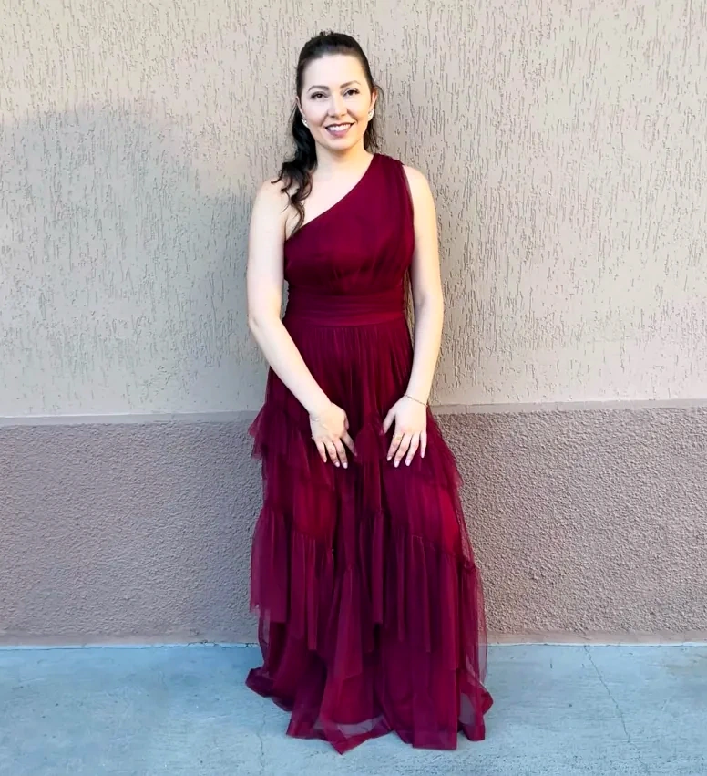

Cones recheados
Embalados um a um, com laço dourado e a etiqueta da Bolin Doces. Chocolate, coco, confeitos coloridos e coberturas crocantes.
Bolos para cada comemoração
Cada bolo é orçado conforme o pedido. Escolha um modelo como inspiração e peça o seu.
Conte o tamanho, o sabor, a decoração e a data da sua comemoração.
Docinhos e mesas de festa
Docinhos em forminhas, bandejas variadas e mesas montadas para comemorar.
Tem uma festa chegando?
Conte pra gente
Por trás de cada doce, existe carinho.
Patricia Bolin
A Bolin Doces acredita que os doces fazem parte das lembranças mais gostosas de uma comemoração. Por isso, cada criação recebe atenção aos detalhes e muito capricho.
À frente desse carinho está Patricia Bolin, que transforma bolos, cones recheados e docinhos em parte de momentos especiais. A ideia é simples: preparar doces que deem ainda mais sabor às suas comemorações.